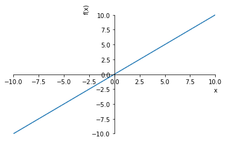
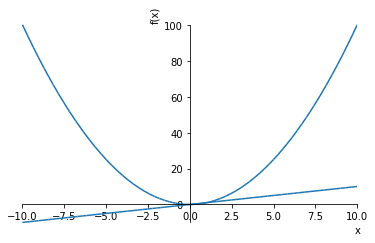
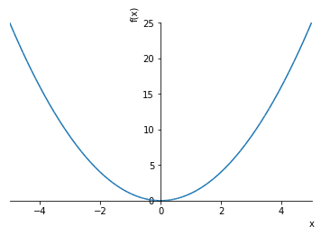
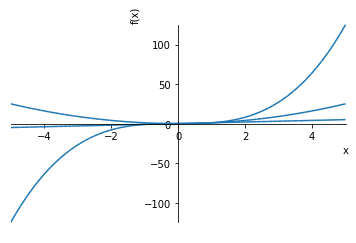
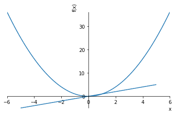
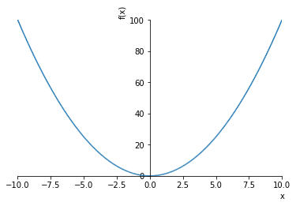
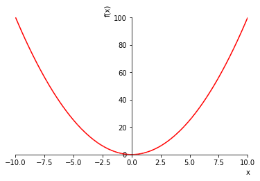

1. 画图
sympy可以方便的绘制图形,如果有安装matplotlib,那么它将会使用matplotlib绘制图形
可以通过 plot()函数来实例化一个绘图类,实现绘图他可以带如下参数:
adaptive: Boolean. 默认值设置为True。将自适应设置为False，如果需要均匀采样，请指定nb_of_points。
depth: int 自适应算法的递归深度。值n的深度最多取样$2^n$个点。
nb_of_points: int. 当自适应设置为False时使用。 该函数在nb_of_points点数处统一采样。
line_color: float. 指定绘图的颜色。
每个plot对象又有如下参数可以设置
- title : str 标题
- xlabel : str x轴标签
- ylabel : str y轴标签
- legend : bool 是否使用图例
- xscale : {‘linear’, ‘log’} x轴坐标按线性还是指数扩展
- yscale : {‘linear’, ‘log’} y轴坐标按线性还是指数扩展
- axis : bool 是否画出坐标轴
- axis_center : tuple of two floats or {‘center’, ‘auto’} 坐标轴中心位置
- xlim : tuple of two floats
- ylim : tuple of two floats
- aspect_ratio : tuple of two floats or {‘auto’}
- autoscale : bool 是否自动扩展
- margin : float in [0, 1] 边的比例
%matplotlib inline
1.1. 2维图形
plot(expr, range, **kwargs)
from sympy import symbols
from sympy.plotting import plot
x,y = symbols('x y')
p1 = plot(x*x)

p2 = plot(x)

plot对象可以将多张图合并到一起,单独一张合并使用append(),多个可以使用extend
p1.append(p2[0])
p1.axis=True
p1.show()

plot也可以指定参数范围
plot(x**2,(x,-5,5,))

<sympy.plotting.plot.Plot at 0x11e4055f8>
plot(expr1, expr2, ..., range, **kwargs)
plot(x,x**2,x**3,(x,-5,5,))

<sympy.plotting.plot.Plot at 0x11e521518>
plot((expr1, range), (expr2, range), ..., **kwargs)
plot((x**2, (x, -6, 6)), (x, (x, -5, 5)))

<sympy.plotting.plot.Plot at 0x11e5ef630>
plot(x**2, adaptive=False, nb_of_points=400)

<sympy.plotting.plot.Plot at 0x11e739048>
sympy的颜色设定有点类似matplotlib的,可以指定特定字符作为标记,比如红色就是"r"
y = symbols("y")
fz = x**2-y**2
plot(x**2,line_color='r')

<sympy.plotting.plot.Plot at 0x11e851b70>
1.2. 绘制3d图形
同时,sympy也可以绘制3d图形,与2d图形形式差不多
plot3d(expr, range_x, range_y, **kwargs)绘制一个算式的图形plot3d(expr1, expr2, range_x, range_y, **kwargs)绘制一个取值范围中的多个图形plot3d((expr1, range_x, range_y), (expr2, range_x, range_y), ..., **kwargs)绘制多取值范围内的多图形
from sympy.plotting import plot3d
p3d = plot3d(x**2+y**2)